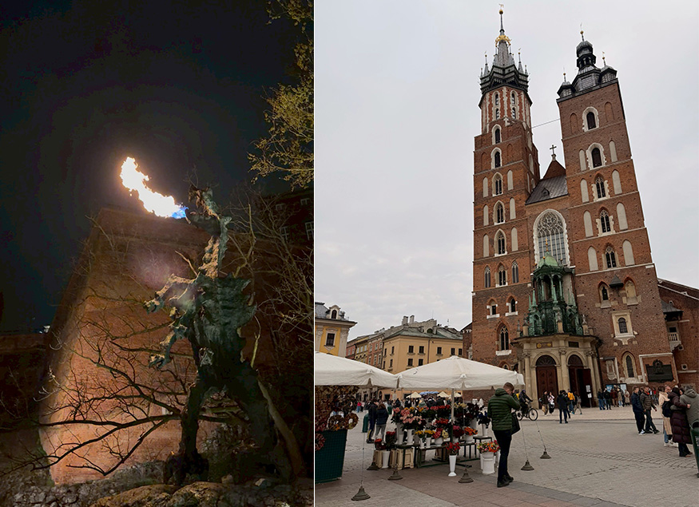
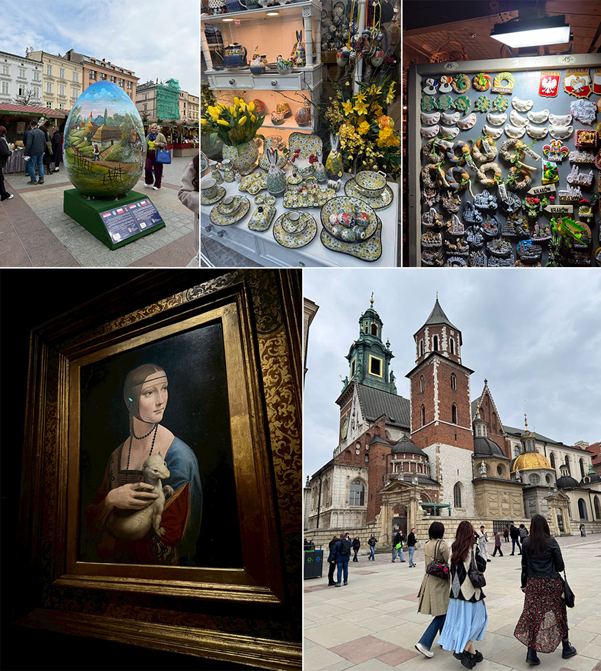
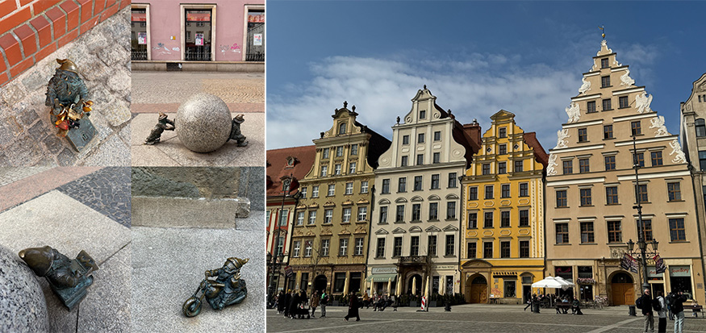
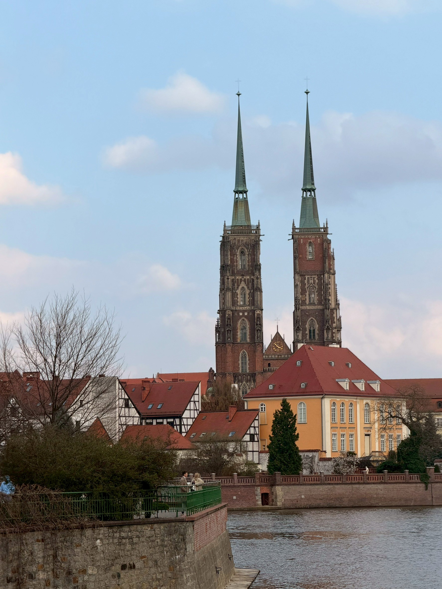
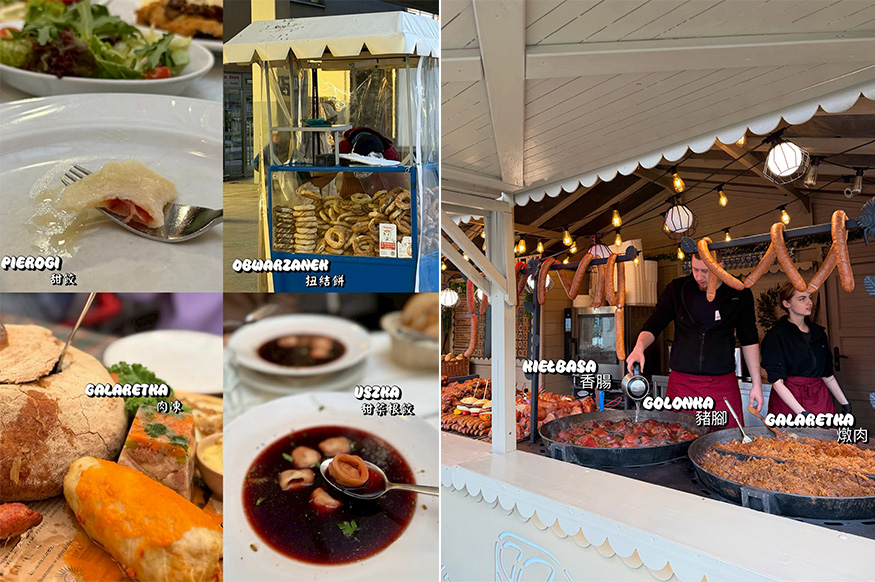

這趟旅行起初是為了去英國拜訪好友，但難得來到歐洲，便決定造訪台灣無直飛、物價相對低、且對亞洲遊客來說算帶點神秘色彩的國家：波蘭。我們沒有選擇首都華沙，而是依朋友推薦，造訪了克拉克夫（Kraków）和弗羅茨瓦夫（Wrocław）。這個在二戰飽受摧殘，無數次毀壞又重建的國家，讓人已先感受到波蘭人骨子裡永不服輸的堅韌。
Kraków
傍晚落地波蘭，海關極其仔細地「逐頁」檢查護照，嚴肅的氣場讓人印象深刻。驅車前往飯店安頓好後，與當地任教的朋友碰面，他帶我們品嚐道地的波蘭菜。餐後我們散步到維斯瓦河畔看噴火龍（Wawel Dragon），這隻龍每五分鐘會伴隨「轟」的一聲，噴出瓦斯真火，在黑夜中既震撼又新奇。
第二天一早，參觀 Kraków 市中心的經典地標：聖母聖殿（St. Mary's Basilica）。這裡每逢整點，塔頂便會傳來號角聲，但每次旋律都會在最激昂時突然中斷。據說是為了紀念古時一位士兵，他在吹號角警告百姓敵軍入侵時，不幸中彈身亡。為了致敬這段歷史，這未完的樂曲便流傳至今。
 |
正逢復活節假期，我們步行到主廣場（Rynek Główny）的復活節市集逛街、覓食，看到好多可愛的彩繪蛋、復活節裝飾。隨後造訪了 Kraków 國家博物館（MNK），為的就是親眼見證達文西的三大名畫之一《抱銀貂的女子Lady with an Ermine》。靜靜凝視真跡的細膩筆觸，女子與銀貂骨骼分明、充滿張力的肌肉線條令人屏息，讓人不得不深深敬佩達文西細膩的繪畫功力。朝聖完名畫，我們散步到瓦維爾城堡與座堂（Wawel Castle & Cathedral），雖需爬一小段坡，但能俯瞰整座城市美景，非常值得！
 |
Wrocław
第三天，我們搭乘波蘭國鐵（PKP），從克拉科夫移動到弗羅茨瓦夫（Wrocław）。這裡不得不先讚嘆波蘭的物價，長達 3 小時的車程，票價竟只要約 300 台幣，相比英國簡直太親民了。我們之所以選擇這座城市，全為了展開一場「小矮人尋寶之旅」。大街小巷隱藏著各式各樣的銅製小矮人，據說這其實是以前波蘭人在高壓威權下，用來諷刺與對抗體制的黑色幽默，很有意思！
傍晚，我們從市區步行約 20 分鐘，到 Odra 河的另一端座堂島（Ostrów Tumski）。原本熱鬧的市區瞬間切換成極致靜謐，彷彿穿越時空。我們放慢腳步坐在河邊長椅，享受這份與世隔絕的溫柔，也為這段旅程落下了浪漫的帷幕。
 |
 |
傳統波蘭菜餚
我們的味蕾在旅程中，迎來一場波蘭傳統美食奇遇。最獵奇的當屬「甜餃子」，藍莓或草莓內餡搭優格，味道很是獵奇，體驗一次就夠了；若想暖胃，湯頭甜口配扎實的「甜菜根餃」是好選擇。接著是外表像冰果凍、吃起來冰冰鹹鹹的特色「肉凍」，風味比想像中好，值得一試。而在克拉克夫街頭獨有的「扭結餅」，雖咬勁十足卻越嚼越香。
主菜則是肉食者天堂，傳統「燉肉」配酸菜相當解膩；國宴級「波蘭豬腳」加入蔬菜、香料與啤酒慢火細燉，Q彈軟嫩；最後來盤「煙燻香腸」配啤酒更是過癮。解鎖這麼多新奇的傳統美食，推薦大家親自品嚐！
 |
心情紀錄
除了正中午，波蘭總自帶專屬的灰濛濾鏡。這裡極少亞洲遊客、少了喧囂，反而比其他國家更具異國放鬆感。漫步老城巷弄，累了就找間咖啡廳感受慢步調。
手機拍不出波蘭的美，它真的是個有魅力的寶藏國家。這個當初為了逃離高物價而臨時起意的國度，最終卻用它的堅韌與溫柔，成了我們整趟歐洲之旅最驚喜、也最深刻的記憶。